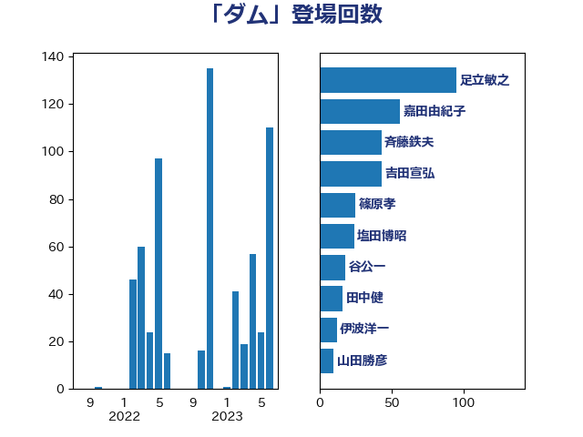

単語「ダム」

| 足立敏之 | 自由民主党 | 95 回 |
| 嘉田由紀子 | 無所属 | 56 回 |
| 斉藤鉄夫 | 公明党 | 43 回 |
| 吉田宣弘 | 公明党 | 43 回 |
| 篠原孝 | 立憲民主党 | 25 回 |
| 塩田博昭 | 公明党 | 24 回 |
| 谷公一 | 自由民主党 | 18 回 |
| 田中健 | 国民民主党 | 16 回 |
| 伊波洋一 | 無所属 | 12 回 |
| 山田勝彦 | 立憲民主党 | 10 回 |
| 渡辺猛之 | 自由民主党 | 9 回 |
| 舟山康江 | 国民民主党 | 7 回 |
| 下野六太 | 公明党 | 6 回 |
| 野田国義 | 立憲民主党 | 5 回 |
| 瀬戸隆一 | 自由民主党 | 5 回 |
| 末次精一 | 立憲民主党 | 5 回 |
| 岸田文雄 | 自由民主党 | 5 回 |
| 小山展弘 | 立憲民主党 | 5 回 |
| 中島克仁 | 立憲民主党 | 5 回 |
| 高見康裕 | 自由民主党 | 4 回 |
| 空本誠喜 | 日本維新の会 | 4 回 |
| 石原宏高 | 自由民主党 | 4 回 |
| 倉林明子 | 日本共産党 | 4 回 |
| 小野泰輔 | 日本維新の会 | 3 回 |
| 堤かなめ | 立憲民主党 | 3 回 |
| 冨樫博之 | 自由民主党 | 3 回 |
| 竹詰仁 | 国民民主党 | 2 回 |
| 福田昭夫 | 立憲民主党 | 2 回 |
| 福島伸享 | 無所属 | 2 回 |
| 石井苗子 | 日本維新の会 | 2 回 |
| 田村貴昭 | 日本共産党 | 2 回 |
| 猪瀬直樹 | 日本維新の会 | 2 回 |
| 斎藤アレックス | 国民民主党 | 2 回 |
| 大野泰正 | 自由民主党 | 2 回 |
| 古川康 | 自由民主党 | 2 回 |
| 仁比聡平 | 日本共産党 | 2 回 |
| 仁木博文 | 無所属 | 2 回 |
| 井林辰憲 | 自由民主党 | 2 回 |
| 上田勇 | 公明党 | 2 回 |
| 高橋千鶴子 | 日本共産党 | 1 回 |
| 須藤元気 | 無所属 | 1 回 |
| 鈴木俊一 | 自由民主党 | 1 回 |
| 野間健 | 立憲民主党 | 1 回 |
| 重徳和彦 | 立憲民主党 | 1 回 |
| 進藤金日子 | 自由民主党 | 1 回 |
| 西村康稔 | 自由民主党 | 1 回 |
| 西岡秀子 | 国民民主党 | 1 回 |
| 藤木眞也 | 自由民主党 | 1 回 |
| 芳賀道也 | 国民民主党 | 1 回 |
| 緒方林太郎 | 無所属 | 1 回 |
| 緑川貴士 | 立憲民主党 | 1 回 |
| 石井啓一 | 公明党 | 1 回 |
| 田畑裕明 | 自由民主党 | 1 回 |
| 猪口邦子 | 自由民主党 | 1 回 |
| 渡辺創 | 立憲民主党 | 1 回 |
| 清水貴之 | 日本維新の会 | 1 回 |
| 泉田裕彦 | 自由民主党 | 1 回 |
| 東国幹 | 自由民主党 | 1 回 |
| 杉本和巳 | 日本維新の会 | 1 回 |
| 早稲田ゆき | 立憲民主党 | 1 回 |
| 早坂敦 | 日本維新の会 | 1 回 |
| 日下正喜 | 公明党 | 1 回 |
| 平沼正二郎 | 自由民主党 | 1 回 |
| 岩渕友 | 日本共産党 | 1 回 |
| 岡田直樹 | 自由民主党 | 1 回 |
| 山口晋 | 自由民主党 | 1 回 |
| 尾崎正直 | 自由民主党 | 1 回 |
| 大島敦 | 立憲民主党 | 1 回 |
| 古賀友一郎 | 自由民主党 | 1 回 |
| 勝俣孝明 | 自由民主党 | 1 回 |
| 務台俊介 | 自由民主党 | 1 回 |
| 加藤鮎子 | 自由民主党 | 1 回 |
| 五十嵐清 | 自由民主党 | 1 回 |
| 中川康洋 | 公明党 | 1 回 |
| 上田英俊 | 自由民主党 | 1 回 |